Counties with Alternative Fuel Stations
2,135 (of 3,142) have public stations
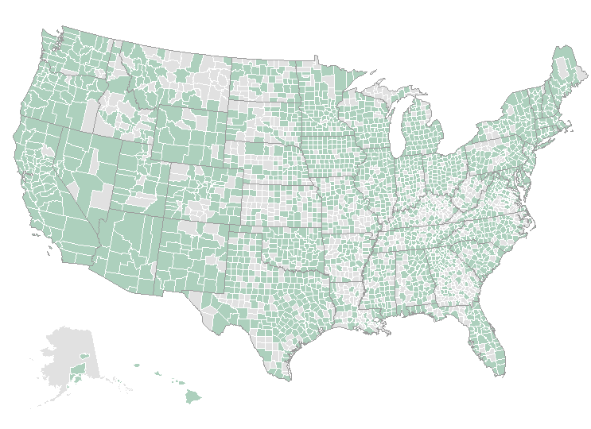 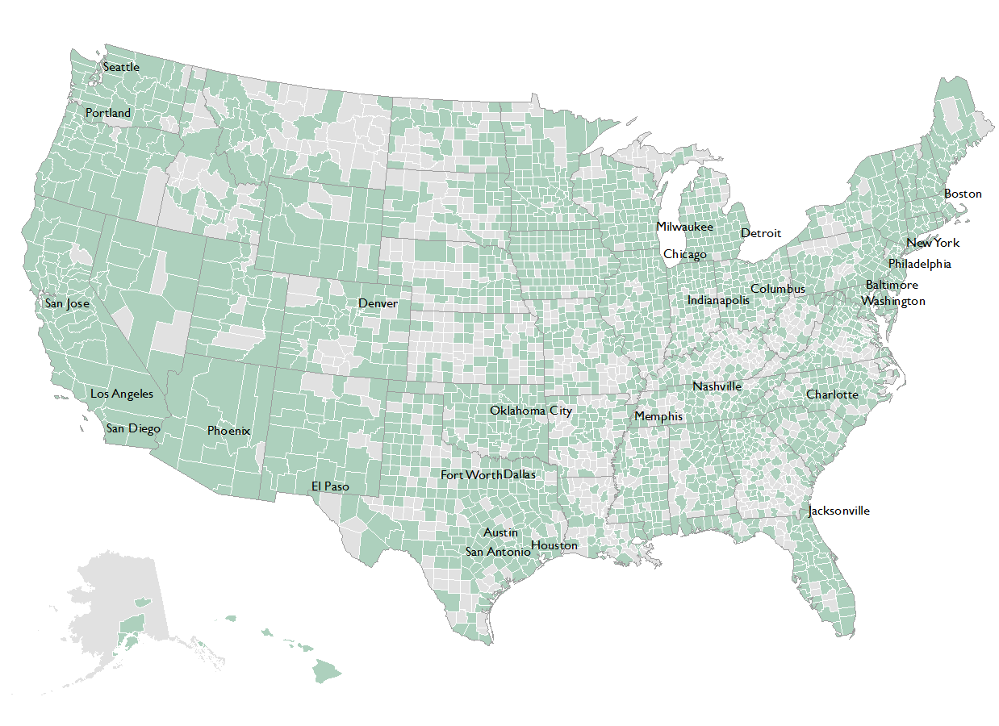Counties with Electric Stations
1,290 (of 3,142) have public stations
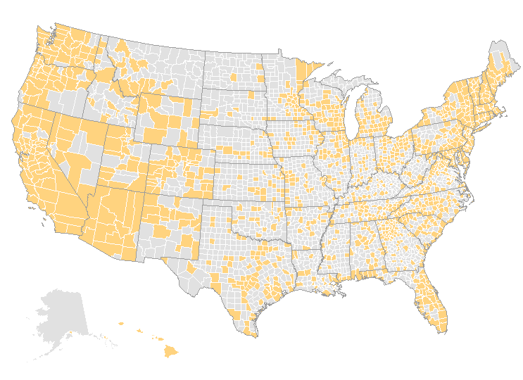 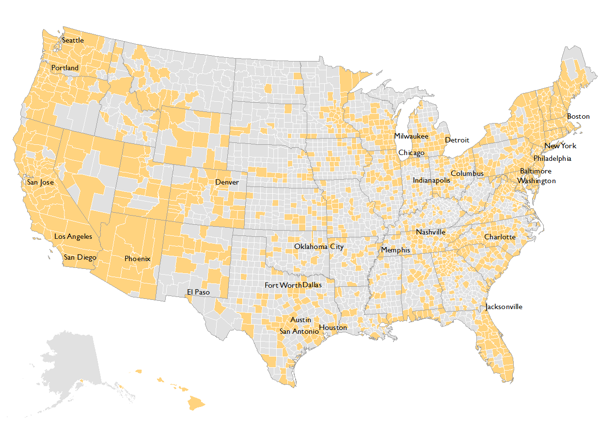Biodiesel
209 public stations
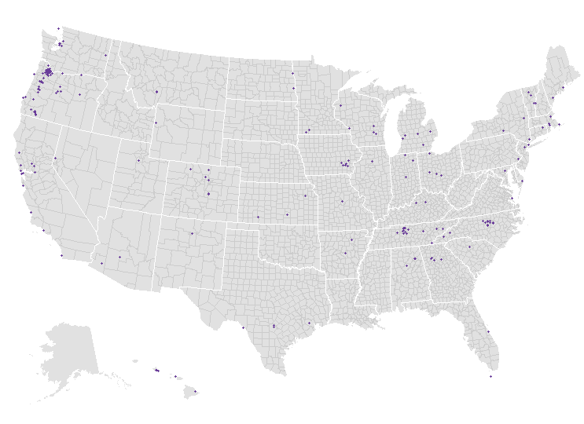Electric
15,527 public stations
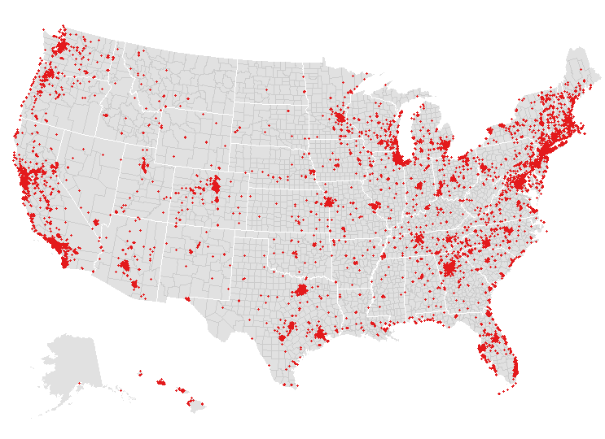Ethanol
2,832 public stations
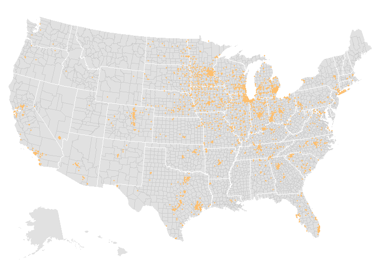Hydrogen
33 public stations
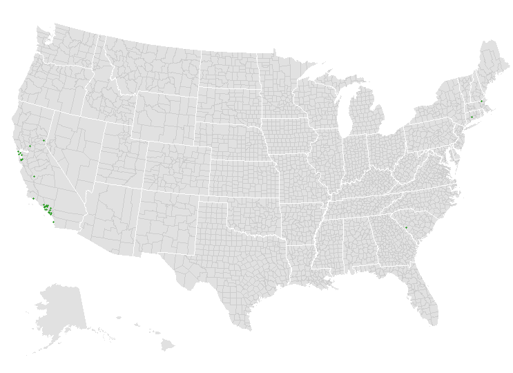Liquified Natural Gas
76 public stations
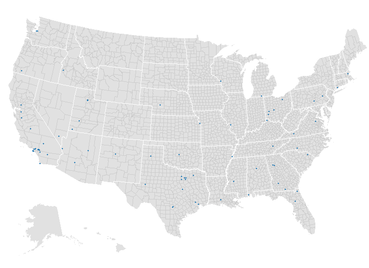Compressed Natural Gas
947 public stations
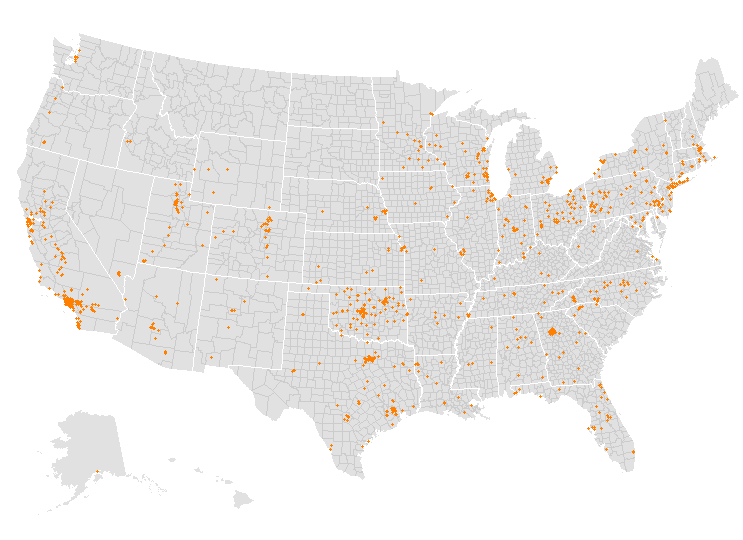Propane
3,289 public stations
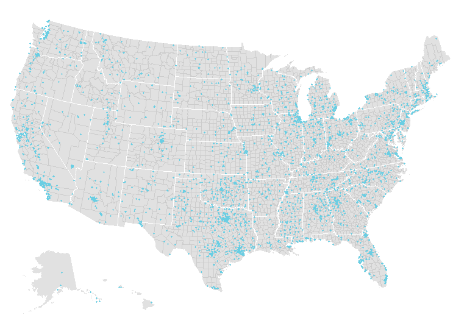{{ COPY.labels.footnote|smarty }}